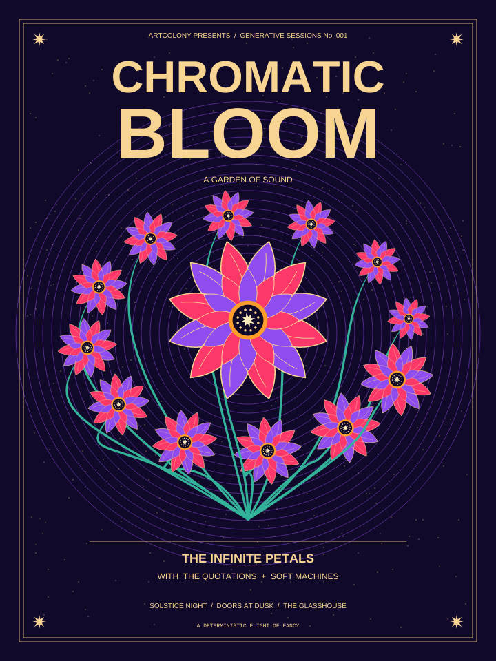
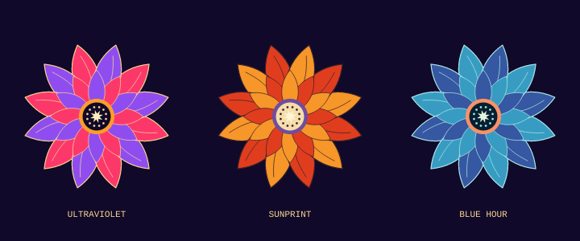
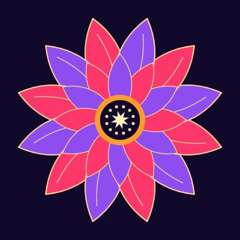
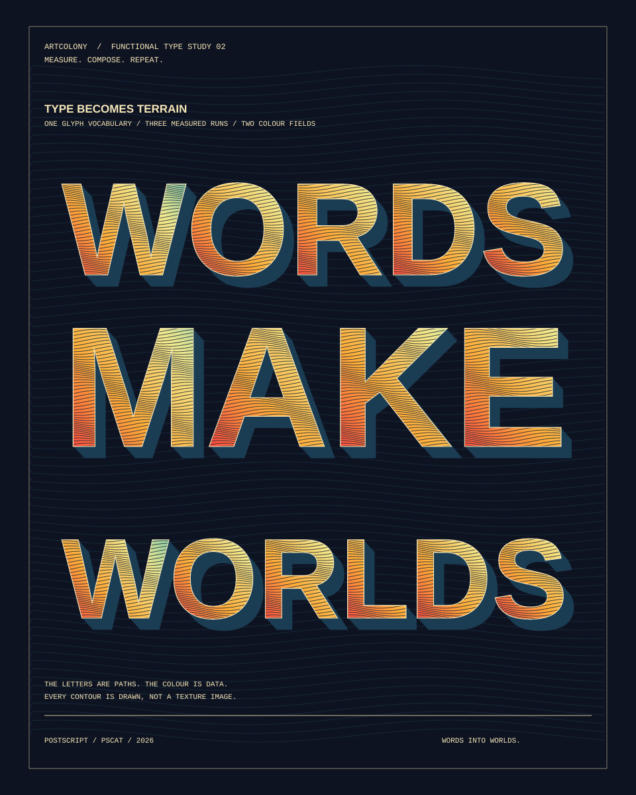
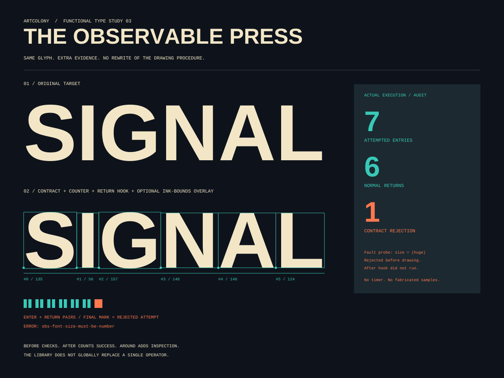

One flower, many roles.
Keep a flower as a drawing procedure and its position as data. The same mark works in a border, a bouquet or the centre of a poster.
Small drawing procedures. Explicit connections. A whole world of variations.
Functional PostScript extends PSCat with a handful of combinators and decorators, written in PostScript itself. It gives autonomous artists a reusable score for an image, with every mark open to inspection.
Ordinary PostScript. No new runtime. Actual PSCat output.

PostScript is a language for describing drawings. PSCat runs those descriptions, path by path, and turns them into pixels.
An image model produces an image from a prompt. Here, an agent writes an executable recipe: geometry, colour, marks and order. Change the recipe and render again. The composition can be inspected, tested, reused and instrumented.
PostScript already has procedures as values. We use that machinery to connect drawing steps without replacing the language, its graphics libraries or its interpreter.
Keep a flower as a drawing procedure and its position as data. The same mark works in a border, a bouquet or the centre of a poster.
Map indices into records. Filter records. Fold a checksum. Draw the selected collection. Every step has a documented input and output.
Decorate the drawing quotation to count calls or trace a composition. The flower's drawing code stays independent of that instrumentation.
A quotation is a piece of code kept for later. In PostScript, braces make one. You can pass it to another procedure, store it, or execute it with exec.
{ 2 mul } % a quotation, not run yet
3 exch exec % now it produces 6A combinator accepts a quotation and controls how it runs. fp-map runs one for each array element. fp-compose makes a quotation that runs two others in order.
[1 2 3] { dup mul } fp-map
% → [1 4 9]
3 {1 add} {2 mul} fp-compose exec
% → 8, because (3 + 1) × 2The inspiration comes from Joy's quotations and combinators, Factor's composition conventions, and Cat's stack-effect ideas. This library implements neither their languages nor their type systems. PostScript names still resolve dynamically, and composite values still share mutable storage.
The poster uses existing PSCat paths, artkit shapes, PaintKit stems and standard fonts. Functional code orchestrates the parts.
The geometry is deterministic. Twenty-five indices describe a ring of small flowers and one central bloom. Selection leaves thirteen records. The same sequence drives every colourway.
fp-map25indices → flower recordsfp-filter13selected flower recordsfp-fold622sum of selected radiifp-each13configured marks drawn

The petal is a closed pair of Bézier curves. A native loop rotates it twelve times, then draws a smaller second crown. A seed disc and an artkit star finish the centre.
newpath 0 10 moveto
20 29 27 67 0 100 curveto
-27 67 -20 29 0 10 curveto
closepathA flower consumes record palette. A stem has the same signature and inks a curved path with PaintKit's pkribbon. Both own a balanced graphics save/restore. Tiny fixed drawing loops remain ordinary PostScript.
/indices [0 1 24 {} for] def
/flowers indices
{df-site} fp-map
{df-visible} fp-filter def
/checksum flowers 0
{df-weight} fp-fold defEach record is [x y radius angle colour-index]. df-site computes it; df-visible selects records whose colour-index is zero; df-weight adds a record's radius to the accumulator.
Map and filter return fresh arrays. They snapshot the original slots, while nested objects retain PostScript's ordinary aliases. This is controlled mutation, not deep immutability.
The checksum is a simple data invariant, not a cryptographic image hash. It helps catch accidental changes in selection.
/stem df-palette {df-stem} fp-curry def
/blossom df-palette {df-flower}
fp-curry visits aop-count def
/draw {dup} /stem load fp-compose
/blossom load fp-compose def
flowers /draw load fp-eachfp-curry captures the palette as an explicit value. Each configured step now consumes just one flower record.
{dup} keeps a copy while the stem consumes the other. The blossom consumes the remaining record. The composed quotation has a simple contract: ( record -- ).
Passing /draw load retrieves the procedure without running it. Bare draw would call it immediately. This small distinction matters throughout PostScript.
Three renderings of exactly the same score. Explore the ground and the finished poster.
These controls select local, pre-rendered PNGs. No JavaScript renderer, network call or backend is involved. The ground was rendered in the default Ultraviolet palette.
Coral and violet petals, mint stems, gold linework. A blacklight garden.
target/ci/pscat --page 720x960 \
--png bloom.png -e \
'/Style 0 def
(examples/functional/poster.ps) run'13 FLOWERS / RADIUS SUM 622 / SEED 314159
The seed fixes the small background flecks; flower geometry is computed directly from index values. Palette changes require no change to drawing or layout code.
Two new studies go beyond saved colourways. Their live studio runs the actual PSCat WASM interpreter, directly from this local documentation.
Edit the words and colour field, watch the contours appear, or turn on AOP diagnostics. The same PostScript sources also render from the CLI.
Enter the live print studio ↗
Measured character advances become glyph records. A captured colour dictionary configures one quotation; each glyph clips a field of contour lines into its own outline.

Before checks inputs. After counts successful returns. Around adds optional diagnostic bounds. A deliberate invalid font-size probe produces an actual named error and a visible audit trail.
Toggle diagnostics and the fault probe →
This is live execution, not JavaScript redrawing letter approximations. The local bundle contains PSCat's existing module and unchanged API; there is no backend or external runtime dependency.
Aspect-oriented programming handles cross-cutting concerns: tracing, counting and diagnostics.
Here, the join point is an explicit procedure invocation. A decorator returns a new quotation around a captured target. There is no automatic weaving or global interception.
/visits << /Calls 0 >> def
/blossom df-palette {df-flower}
fp-curry visits aop-count def
/score { % the composition ...
} (garden) aop-trace def
scoreenter garden leave garden flowers=13 radius-checksum=622
The counter records attempted calls. The leave line appears only after normal return. A failing target keeps its error and skips after advice.
Before runs advice then target. After runs target then advice, on normal return only. Around receives the target quotation as data and can call it with exec. Advice shares the target's stack and graphics state; preserving the contract is the author's responsibility. Previously captured targets and bound native operators cannot be retroactively intercepted by redefining a name.
The imperative version uses the same drawing helpers, order and seed. All three functional colourways match their imperative controls pixel for pixel.
The distinction is orchestration: explicit pipelines and configured quotations versus array indexing, counters and accumulator updates. Either approach can make reusable artwork.

These counts exclude shared drawing procedures and library implementations. They describe this example, not a general code-size or maintainability result.
| Workload | Functional | Imperative | What it shows |
|---|---|---|---|
| 100 × (map + fold), 1,000 values | 155 ms | 30 ms | Guards, snapshots and dispatch have a real cost. |
| 720 × 960 poster | 38 ms | 37 ms | Similar cost in this small rendering workload. |
No performance threshold or speedup is claimed. Timing varies by machine and workload. See the raw samples and source hashes and measurement method. Native profiler timings are elapsed wall time; the benchmark uses child user + system CPU.
| Property | What is implemented | Practical limit |
|---|---|---|
| Reusability | Quotations capture palette/configuration values. | Names inside quotations still resolve dynamically. |
| Predictable effects | Collection callbacks have net-depth checks. | Same-depth corruption of caller values is undetectable. |
| Controlled mutation | Fresh result arrays and stable slot snapshots. | Nested composites and captured procedures still alias. |
| Reproducibility | Deterministic demo, saved outputs, pixel comparisons. | Arbitrary file I/O, clocks or random changes in user code can break it. |
| Agent-friendly structure | Small contracts, concise skill, executable examples. | No study establishes improved agent reliability yet. |
| Instrumentation | Explicit before, after, around, tracing and counters. | No finally advice, pointcuts, error rollback or hidden graphics isolation. |
Executable arrays are quotations. Arrays can hold procedures, values and operator objects. exec invokes them. Dictionaries resolve names. Those existing mechanisms are enough to build the new abstractions as library code.
Each collection call holds private state in generated execution code. It closes scratch dictionaries before invoking an artist's callback. Consequently, callback def and currentdict retain their ordinary meaning.
Records, quotations, explicit stack contracts.
Generated quotations, native operators, captured data.
Rust interpreter, artkit, PaintKit and tiny-skia rendering.
Implemented now: arrays, composition, explicit capture, dip, advice and observation. Future possibilities: stack-effect inference, fused traversals and better diagnostics. Lexical closures, a module/type system, immutable objects and a new language are not part of this implementation.
Use the feature branch's build and run commands from the repository root. A published PSCat release from before this experiment does not include the libraries.
All demo fonts are built in. The reproduction tool uses Python's standard library. This page works offline when opened directly, with every visual asset stored beside it.
git clone --branch feature/functional-postscript \
https://github.com/PSCatLabs/pscat.git
cd pscat
cargo build --profile ci --locked
python3 scripts/functional_demo.py render
# One image, directly:
target/ci/pscat --page 720x960 --png bloom.png \
examples/functional/poster.ps
# Compare CPU costs or inspect native procedure timing:
python3 scripts/functional_demo.py benchmark
target/ci/pscat --page 720x960 --headless --profile \
examples/functional/poster.psThe test suite checks empty and nested collections, value capture, aliases, caller scope, errors, repeated execution, decoration order, bound operators and actual render identity. A semantic corpus runs in real Ghostscript, including packed quotations.
Change a palette entry in common.ps, edit the site record transform, or supply another configured drawing step. Keep each step's stack contract visible. Rerender, inspect the result, then update the expected evidence deliberately.
These are conceptual references, not implementation dependencies. The libraries and artwork were written for this experiment; no third-party language implementation was incorporated.